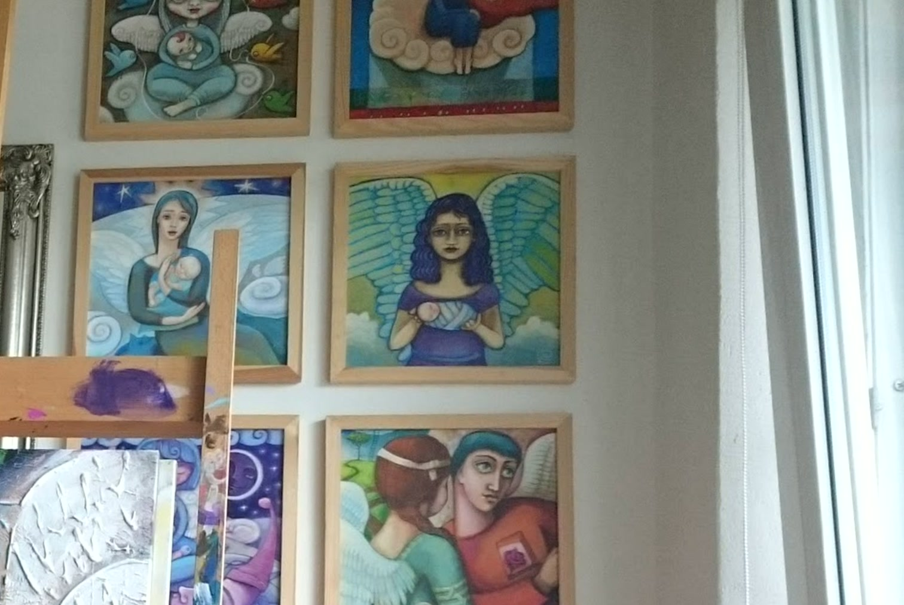
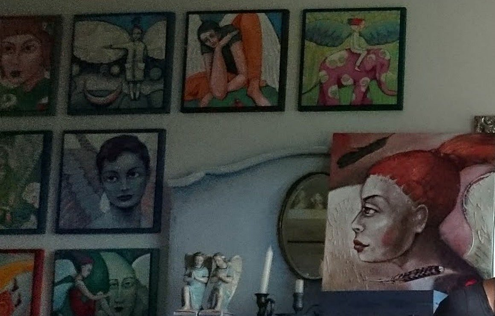

Pracownia malarska w Zielonej Górze
Anioły z ludzką twarzą, malowane ręcznie
Maluję obrazy i portrety na zamówienie. Najczęściej anioły – nie te z mitów, tylko takie, które są blisko nas.


O mnie
Grafika i malarstwo to moje największe pasje
Nazywam się Lilianna Batory, a Galeria Lilu to moja pracownia w Zielonej Górze. Maluję obrazy i portrety na zamówienie. Ulubiony temat to anioły, ale inne od tych, o których uczą mity czy religie.
Moje anioły mają ludzkie twarze, marzenia i problemy. Maluję je gładko i kolorowo albo z grubą fakturą farby, którą widać dopiero z bliska.
Cykl obrazów
Anioł Stróż na każdy dzień roku
Stworzyłam cykl 366 obrazów, po jednym na każdy dzień roku, także na 29 lutego. Każdy może w nim znaleźć swojego Anioła Stróża – takiego, który ochroni, doda odwagi i będzie czuwał nad bliskimi.
Wybierz datę urodzin, imienin albo innego ważnego dnia i zapytaj mnie o anioła na ten dzień.

Co maluję na zamówienie
Możesz wybrać gotowy obraz z pracowni albo zamówić własny – dla siebie lub na prezent.



Obejrzyj obrazy na żywo
Na ekranie nie widać faktury farby. Zadzwoń i umów się na wizytę w pracowni.
Objazdowa 37f/3, 65-752 Zielona Góra
Telefon codziennie 9:00–21:00
Porozmawiajmy o Twoim Aniele Stróżu
Zadzwoń. Pokażę obrazy z pracowni albo namaluję taki, jakiego szukasz.
Telefon codziennie 9:00–21:00 · albo napisz SMS